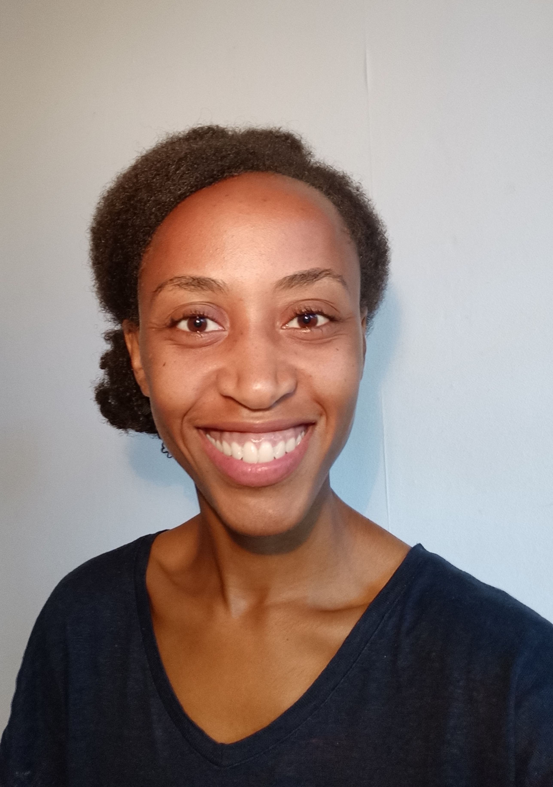

 <!-- bio Section -->
    <section class="success" id="bio">
        <div class="container">
            <div class="row">
                <div class="col-lg-12 text-center">
                    <h2>Bio</h2>
                    <hr> <!-- class="star-light"> -->
                </div>
            </div>

	  <div class="row">
 	      <div class="col-lg-4">
		<p> My story isn't the most pretty one to tell. It all started when I temporarily lost the ability to walk & talk. I also gained a tremor & spent most of what should have been my waking hours, asleep. 
		After countless tests & analyses, the culprit had been found: Stress. I couldn't believe something so 'small' could have such a profound effect on the body!
		After trying many different things to rehabilitate myself, it was so clear that Meditation, Yoga & Dance were all tools that were tremendously helping my recovery. 
                Sometimes I couldn't walk forwards, but a few dance steps could get me there (the marvels of the human brain!). 
		</p>	     
              </div>

 	    <div class="col-lg-4">
		<p>
		So, I kept practising and the more I got 'back into my body' the more I progressed on recovery. I stuck to those three practices and now, I live a life greater than I ever thought possible, and feel better than I previously did! 
		<br> I had always had a huge fascination with the human body & had studied the technology surrounding it (Bsc. Biology, Msc. Biotechnology, Msc. Technology). 
		But little did I know that the technology needed to revive myself was so ancient & underrated! 
                <br><b> Now,  I'm on a mission to empower women to get back into their bodies, and live extraordinary lives!</b>
         </p>
          </div>

 	    <div class="col-lg-4">
		<div style= "text-align: center">
              <br> 
 		 
	<p><b> Tineka Blake </b></p>
	<p> Certified Dance teacher, Experienced Yoga, Meditation Teacher & Coach  </p>
          </div>

</div>
</div>
   </section>

